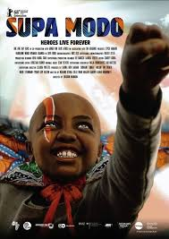
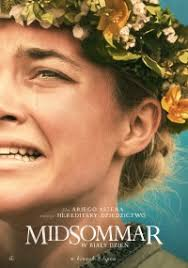

Spider-Man (2019)
Peter Parker wyrusza na szkolne wakacje do Europy. Nie będzie mu dane odstawienie kostiumu Spider-mana na zbyt długo. Są w filmie i teorie spiskowe, i gigantyczna wiara w moc autokreacji, i autotematyzm ocierający się czasami o poważny namysł nad statusem kulturowym całego uniwersum. Jakby twórcy chcieli przesłuchać samych siebie: czy zjawisko, które stworzyliśmy - konglomerat aktorów, postaci, symboli, opowieści i mitów - to na pewno tylko komercyjne widowisko, czy może już nowa świecka religia?
Supa Modo (2018)
Jo jest supermanką. Przy użyciu woli przesuwa przedmioty, zatrzymuje czas, a nawet zmienia wynik meczu piłkarskiego. Przed nią największe wyzwanie w życiu. Przystępując do realizacji swojego pełnometrażowego debiutu, Likarion Wainaina wysoko postawił sobie poprzeczkę. Nie dość, że podjął się niezwykle trudnego tematu, to dodatkowo utrudnił sobie zadanie, decydując się skierować swoje dzieło do młodszej widowni. Czy da się w ogóle opowiedzieć o ostatnich dniach nieuleczalnie chorego dziecka, nie popadając w nadmierny melodramatyzm i unikając epatowania cierpieniem? I to w taki sposób, aby zasiadający na sali kinowej rówieśnicy głównej bohaterki nie poczuli się przytłoczeni i przestraszeni przedstawionymi wydarzeniami?
Midsommar (2019)
To, czego boisz się najbardziej, czai się w pełnym słońcu. Dani (Florence Pugh) i Christian (Jack Reynor) to młodzi Amerykanie, którym nie układa się w związku i rozważają rozstanie. Niespodziewana rodzinna tragedia zbliża ich jednak do siebie, a pogrążona w żałobie Dani postanawia dołączyć do Christiana i jego przyjaciół, aby wziąć udział w wakacyjnej wyprawie na północ Skandynawii. Tam, w odciętej od świata wiosce, raz na 90 lat obchodzone jest prastare święto związane z letnim przesileniem. Wyprawa na dziewięciodniowy festiwal z początku wygląda na beztroską wycieczkę do krainy, w której nigdy nie zachodzi słońce. Jednak celebrowane w sielskiej scenerii obrzędy z czasem przybierają nieoczekiwany, coraz dziwniejszy obrót...